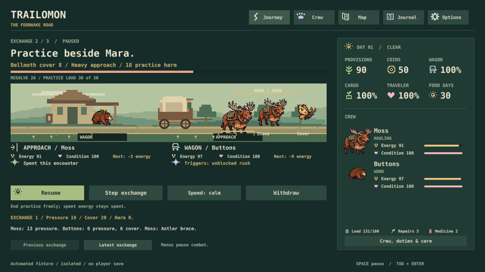

Trailomon · November 1, 2026 · current build b8fcf2c
The road works. The battles need more depth.
My assessment: about 75% Oregon Trail / 25% creature-collection RPG. Discovery feels closer to 65/35; Classic closer to 80/20. These are design judgments, not measured player ratings.
New direction approved in chat: closely follow Astronarch's independent attack and repeating-ability system, adding the wagon as a defendable target. This supersedes A1's limited experiment. S28 is now a playable isolated wagon ambush. Six-kit/equipment depth (S29) and expedition integration (S30) remain next. Only A2/A3 still need answers here.
What the evidence says
The complete expedition, food, weather, cargo, crossings and delivery clock dominate. Starters, wildlife, six-species recruitment, saved tracks and field notes now add collecting. We are still in core systems/content, not release polish.
Combat is not yet delivering Astronarch-like depth. Positions and a few pair interactions matter, but Mara's two creatures share one Resolve bar and a fixed script. Most abilities fire once. Three utility items and travel-focused habits offer few ways to build a different fighting team.
Current combat share: about 9–19% of simulation commands for fight-seeking policies, and 0% for peaceful play. Including Mara gives roughly 1.4–1.7 battles per trip; road-fight-only Classic averages 0.79. This is not measured playtime. My proposed target is 15–20% of active player attention, with peaceful play viable.
How I measured it / limits
192 journeys: eight policies, seeds 1–24, each replayed exactly. Current simulation and existing report validator; woodland/ridge, normal supplies, no purchased items or habits. Commands include automatic travel and battle steps but omit reading and menu clicks. No independent enjoyment study or new listening/physical-input test.
| Policy | Battles / trip | Combat commands |
|---|---|---|
| Peaceful, either tested start | 0 | 0% |
| Classic road-fight seeking | 0.79 | 9.5% |
| Classic + Mara | 1.63 | 19.0% |
| Discovery + Mara, no searches | 1.63–1.67 | 16.9–17.8% |
| Discovery + Mara, all searches | 1.42–1.54 | 13.5–14.4% |
Calm travel uses 20 seconds/day; combat 5 seconds/exchange. Three or four exchanges give at most 15–20 seconds of automatic resolution per fight, plus setup and pauses. Combat is only 2.8–5.5% of the scheduled travel-plus-combat clock in fighting cohorts. Neither clock share nor command share measures actual player attention.
What to keep, reconsider or retire
- Keep: expedition supplies, fatigue, quiet travel, original creatures and peaceful alternatives.
- Reconsider: shared enemy Resolve; Classic as the first experience; generic habit toggles; full-crew recruitment dead ends; discovery's time budget.
- Retire from the UI: Trust 1–3. It rises after a trip but currently changes no gameplay.
- Keep internally: manual combat for old-save compatibility until a tested migration exists.
Habit tradeoffs need evidence, not more layers. The earlier fixed-policy habit check reduced Brindlehorn on-time arrivals from 4/16 to 1/16. That does not prove an optimized player cannot use the habit well.
A real conflict: exploration versus the deadline
Accepting Mara and every track search produced road-closure rescues in 39/48 Discovery runs, versus 4/48 with the same policies but searches disabled. Searches averaged 4.5 per journey. Even without them only 2/48 arrived on time: these steady woodland/ridge policies are already slow.
This is a warning about defaults, not proof every search must be free. The next already-authorized S5 balance check should compare one or two chosen detours and adaptive pace/routes. No new permission is needed for that investigation; costs and deadlines are unchanged.
What Astronarch contributes
Its developer emphasizes distinct hero skills, positioning, changing opponents/routes and items that alter a hero's role. Our missing ingredient is repeated preparation → visible team interaction → meaningful next choice. More scripted fights alone will not supply it. Developer description.

Current priority: the owner-approved Astronarch-style wagon-defense replacement (S28–S30), with expedition balance checks. A2/A3 remain optional open decisions. D4's extra Mara scripts and D5's collection aims remain open in their original review; I recommend delaying them until this test. Earlier E1/E2 choices stay separate. Art remains deferred. Saves/settings work; native activation, listening and human pacing gaps remain open.
Approved combat direction / original A1 proposal
A1Test a real two-team Mara battle
Build one isolated developer prototype with two independently acting enemy creatures, individual condition/action timing, and two clearly different player pairings. Keep two active companions, automatic resolution, visible intent, existing art and expedition energy costs. Compare against the current spar before replacing normal encounters.
Why: one shared bar and mostly once-only abilities cap the team-building payoff. Test whether protecting a partner or disrupting an opponent visibly changes the fight.
Cost: one substantial combat-prototype PR plus focused comparison. No new species, XP grind or art pass. Recommendation: first; approval is for the isolated experiment, not a wholesale replacement.
A2Make Discovery the first experience
Fresh installations start with one chosen hauler and build their crew on the road. Keep Classic available as an explicit alternative; preserve existing profiles, saved selections and progress.
Why: Classic supplies four of six species immediately. Discovery expresses the collecting premise better without adding another system.
Cost: small onboarding/default change with save-selection checks. Recommendation: yes, alongside pacing improvements; do not silently switch current players.
A3Remove the inert Trust number
Remove Trust 1–3 from the crew interface. Keep names, temperament descriptions and earned memories; retain compatibility with its saved field. Do not add a replacement meter.
Why: Trust increments when a journey ends but affects no rules. It suggests relationship depth the game does not provide.
Cost: small clarity change and one focused rendered check. Recommendation: yes.